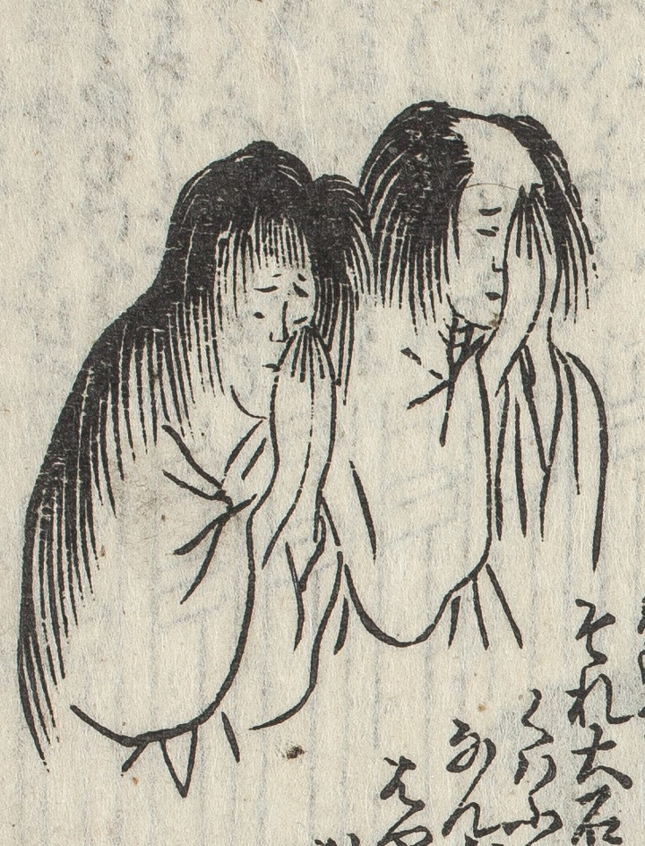

幽霊；ユウレイ，亡魂；ボウコン，亡魂；ユウコン，夫婦；フウフ

川合宗太夫夫婦の幽霊が朦朧として幻のごとく姿を現す。晴れやかな顔色で成仏することを告げる。目を閉じて拝んでいる姿。白装束、ざんばら髪で足がない。
著作者：式亭三馬作・豊國画／出典：親書誌：U426_nichibunken_0450：淺草觀音利益仇討雷太郎強惡物語／日付：2021／資源識別子：U426_nichibunken_0450_0007_0000
Copyright (c)2010- International Research Center for Japanese Studies, Kyoto, Japan. All rights reserved.